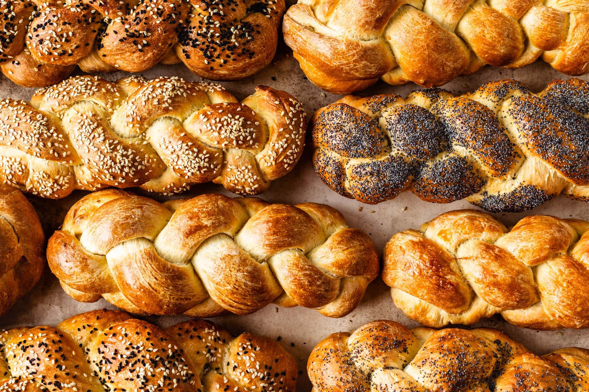
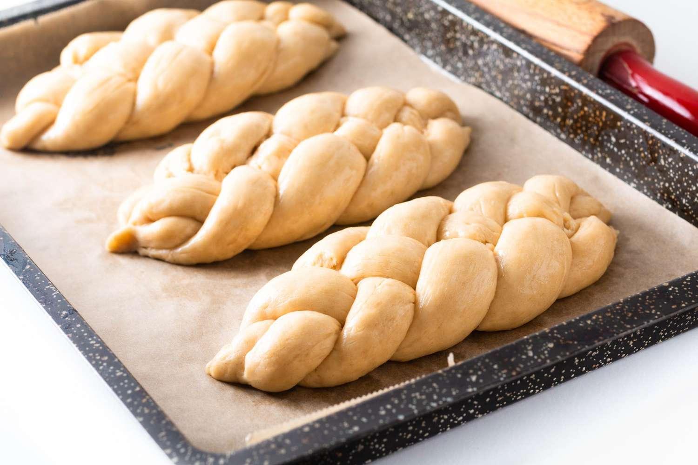

Ingredients:
- 1 cup warm water
- 2 eggs
- ½ cup oil
- ½ cup sugar
- 1 tsp salt (heaping)
- 4 cups bread flour
- 4 tsp yeast
- Honey (to taste)
Directions:
- Mix all ingredients together in a bowl
- Pour mixture into bread machine, select dough setting (around 1½ hours)
- Braid the dough, let rise for 4-6 hours
- Bake at 350°F for 18 minutes
Equipment Needed:
- One big bowl
- Spoon
- Bread Machine - can be done without
- Oven
Important Notes:
- A bread machine is not needed, but recommended
- You can freeze the bread and reheat it before serving